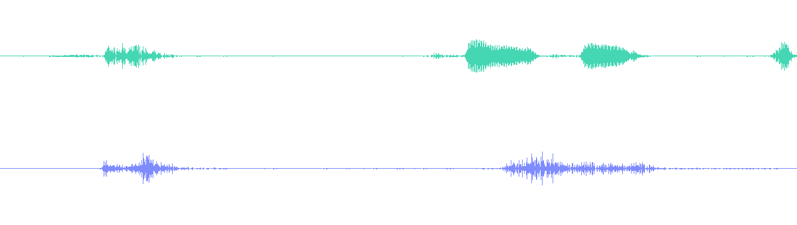

真实多模态状态
AMI 原始音视频用 Kyutai Mimi 与 Wan2.1 Wan-VAE 表示，而非占位符。
一个因果对齐的最小实现：在真实的多方会议流上，学习预测接下来的文本、音频与视频状态。
项目仍在进行中。本页展示目前已经完成的阶段性工作与实验结果。
原系统面向统一、低延迟的文本、音频与视频生成。本实现使用公开组件与紧凑的共享预测器，在有限的数据与算力下验证核心训练方法。
AMI 原始音视频用 Kyutai Mimi 与 Wan2.1 Wan-VAE 表示，而非占位符。
当前预测只能看到已经发生的信息，不会提前读取后面的内容。
文本、音频、视频三种损失都为同一个融合状态提供有限且非零的梯度。
固定数据划分并重复三个训练种子，让每项结果都可以重新核对。
AMI 提供同步的耳机音频、近景视频、房间全景视频、说话人身份与词级时间标注。每位与会者轮流被当作 agent，其余人构成用户侧。

1,856 角色视角 · 5.8000 独立小时
548 角色视角 · 1.7125 独立小时
按 282 个时间位置组织
训练与验证既无重叠会议，也无重叠人物。Corner 视频是共享场景，而非用户专用摄像头。
AMI 媒体片段 © AMI Consortium，依据语料许可署名使用；为本次研究演示做了裁剪与排布。语料来源 · CC BY 4.0
本实现刻意不去重建未公开的完整规模配置。它只问一个更窄的问题：真实的文本、codec 与 VAE 状态，能否共享一条有效的下一状态训练通路？
真实先前状态 → 当前目标
每个单元使用真实先前状态 → 模型给出单步预测
文本结果来自 S2 上下文消融；音频与视频结果来自 S3 统一模型，并报告 seeds 7、17、29 的验证均值。这些数字证明局部因果预测机制能够工作，但不代表连续生成质量。
| 条件 | CE ↓ |
|---|---|
| 正确因果上下文 | 2.93 |
| 无用户/历史（基线） | 4.89 |
| 打乱上下文（基线） | 6.31 |
在全部三个文本骨干种子中，正确因果上下文均胜出。增益来自组合上下文，而非单独的用户语义。
证明了：文本头确实在使用因果上下文——移除（4.89）或打乱（6.31）后 CE 约翻倍。
不能证明：用户驱动的语义理解。CE 2.93（perplexity ≈ 18.6）说明的是上下文的使用，而非对用户流的语义理解。
| 条件 | Top-1 准确率 ↑ |
|---|---|
| 模型 | 15.99% |
| 复制先前码（基线） | 14.58% |
三个种子均超过「复制先前 Mimi 码」。对用户音频的敏感度仍不稳定。
证明了：相对复制基线有微小但可复现的增益（+1.4 个百分点，三个种子一致）。
不能证明：用户音频理解或连续音频生成——对用户音频的稳定敏感度尚未得到证明。
| 条件 | MSE ↓ |
|---|---|
| 模型 | 0.0087 |
| 复制先前状态（基线） | 0.0111 |
潜空间误差比复制低约 21%。移除或打乱共享场景对全部三个种子都有伤害。
证明了：视频头确实在使用共享场景——破坏它会对三个种子都造成伤害。
不能证明：具有感知意义的运动生成——报告值是潜空间 MSE，不能直接换算为像素空间 PSNR；模型与复制基线都处于很小的绝对误差量级。
简单来说：S2 说明文本模型会使用前面已经发生的内容；S3 说明统一模型的音频和视频预测在三个种子上都超过了直接复制上一状态的做法。下一节展示同一个 S3 模型的单步输出。
| Seed | 文本 CE ↓ | 音频 top-1 ↑ | 视频 MSE ↓ | Checkpoint 重载 |
|---|---|---|---|---|
| 7 | 2.93485 | 16.188% | 0.008594 | 0 错误 |
| 17 | 2.93456 | 15.922% | 0.008535 | 0 错误 |
| 29 | 2.93481 | 15.847% | 0.009047 | 0 错误 |
| 均值 | 2.93474 | 15.986% | 0.008725 | — |
示例来自一段提前选好的 AMI-medium 验证片段。模型每隔 160 ms 读取真实的上一时刻状态，再预测接下来的文本、音频和视频。这里展示的是每一步各自的预测结果，还没有把预测结果连续接起来。
示例信息：S3 seed 7 模型 · speech_start 片段 · 16 个时间单元 · 共 2.56 秒。片段在模型运行前就已经选定。
三栏依次为真实目标、持续复制上一状态的固定基线，以及 S3 单步预测。该片段中的运动较细微；单片段视频 MSE 为 0.03482，复制基线为 0.05202。页面主结果仍采用完整验证集三种子均值，而不是这个单片段数字。
画面显示的是逐像素亮度绝对差，并将显示强度统一放大 8 倍，便于观察变化区域。它只是视觉辅助，不是训练或表格中报告的 latent-space MSE。

本片段音频码准确率为 14.19%。它是代表性诊断样本；总体结论使用完整验证集三种子均值 15.99%。
“Mm-hmm.” → “like, yeah, okay.” → “we're gonna have to do something” → “Okay, so we've got our…” → “So, yeah, I think we…”
片段内容词元准确率：21.15%这些短句不能拼接成一段自然、连贯的模型回复；它们只用于展示带真实先前状态的局部词汇预测。
使用当前状态 zk 预测下一状态 zk+1，修正了早期版本中的一格错位。
最后一个单元不能监督一个并不存在的未来视频状态。
因果文本历史只能包含当前时刻之前已经结束或已经生成的内容。
Mimi 码与 Wan latent 与原始前缀重算一致，各自 18/18 项检查通过。
训练集和验证集没有重复的会议或参与者。